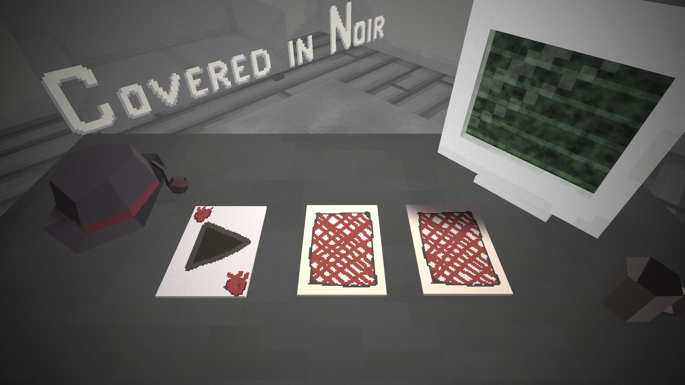
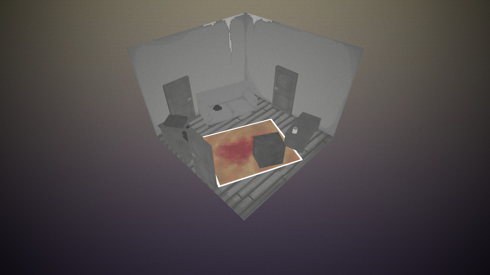
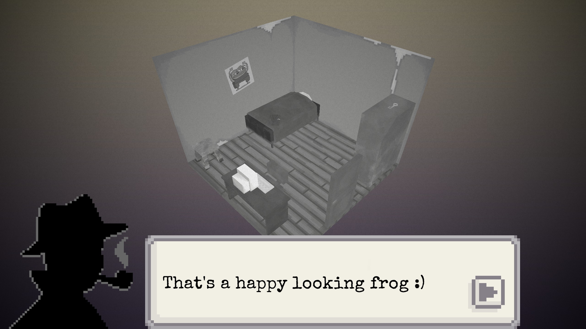

Covered In Noir
Year: 2024Engine: Unity
Platform: Windows
My part: Music, Sound design, 3D-modeling
Covered In Noir is a gamejam game we made in four days with a team for Finnish College Jam #6 in the spring of 2024. The jam theme was "Why were you late?"
In the game you are a detective trying to solve what happened in a trashed hotel room. Find the clues and piece the story together.
This time I took a break from being responsible for programming, and mostly concentrated on audio. I composed the music and made most of the sound effects from scratch.
Download
The game can be downloaded for Windows from the itch.io page.

Gallery
Click to open images



×